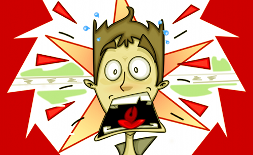
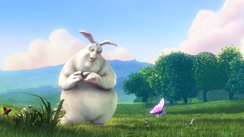
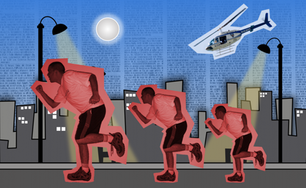

Animación para Principiantes
Animar es un arte. No. Animar es un arte divertido. También podríamos decir que animar es una técnica mediante la cual le das vida a personajes u objetos, pero lo cierto es, que animar es muchas cosas más... sobre todo: es magia!
Para hablar de animación, debemos empezar por hablar de nuestros ojos. ¿No es extraño? Si, lo es... sin embargo, la capacidad de generar la sensación de animación parte de nuestra capacidad para ver, más específicamente de la forma en que vemos. Ver es una ciencia!
Imagina que tienes una montaña de fotografías, ahora imagina que comienzas a verlas, una por una, tan rápido como puedas. Cada vez que te concentras en una foto, tus ojos capturan la información y se la envían a tu cerebro para que este la procese y tú la puedas interpretar: veo una casa, veo un barco, veo a mi tío!, etc.
Normalmente las personas creen que "ver" es simplemente abrir los ojos, pero en realidad cada vez que "miras" sucede un gran intercambio de información entre tus ojos y tu cerebro, para que tu sientas que "ves". Este proceso no es fácil de percibir porque sucede en un espacio de tiempo sumamente pequeño, muchísimo menos que un segundo.
Ahora bien, veamos que sucede cuando tomas la montaña de fotografías y comienzas a repasarlas de manera rápida, una por una: por cada imagen que colocas frente a tus ojos, tu cerebro comienza a hacer una interpretación de la misma, sin embargo, dado que estás reemplazando cada imagen por una nueva,
si lo haces a la velocidad adecuada, tu cerebro no alcanza a interpretar la totalidad de la primera foto y sin embargo debe empezar a interpretar la imagen que sigue.
Cuando el flujo de fotos es lo suficientemente grande y pasa a gran velocidad, tu cerebro comienza a mezclar la información de una imagen, con la que sigue y con la que sigue, generando la sensación de movimiento, es entonces cuando la magia sucede y podemos hablar de animación.
Se calcula que el ojo humano solo es capaz de diferenciar hasta 24 imágenes si las trata de ver, una tras otra, durante un segundo. Si el número de imágenes es igual o superior a 24, entonces el ojo comienza a percibir que los elementos que componen la imagen empiezan a adquirir movimiento.
Un momento. ¿Quiere decir esto que una película no es más que un enorme montón de fotografías que pasan frente a mis ojos a una velocidad impresionante? La respuesta corta es: Si! Sin embargo, debemos tener en cuenta que una película es algo un poco más complejo, pues es contenido audio-visual, lo que significa que también incluye sonido y una gran cantidad de detalles técnicos que dejaremos pendientes para después.
En el mundo de la animación, cada imagen que la compone se conoce como marco (frame en inglés), así pues, la velocidad con la que se proyecta una película se mide en marcos por segundo (en inglés: Frames Per Second o FPS). Entre más marcos tenga una animación, la ilusión de movimiento será mucho mejor y entre menos tenga, la sensación de fluidez se irá perdiendo.
En la actualidad, contamos con una gran variedad de técnicas de animación, con las cuales podemos crear contenidos como los que vemos en películas y vídeos. Estas son algunas de las técnicas:
- Animación 2D: Se trata de una técnica basada en planos para la creación de los marcos que harán parte de la animación. Hey! un momento, Qué es un plano? Cuando pienses en un plano, piensa en una superficie uniforme, similar a una hoja de papel, a una cancha de fútbol, al suelo de tu casa o inclusive piensa en una pared. Sé que suena extraño, pero un plano no es más que una superficie plana.
Ahora, en términos un poco más complicados, un plano es un área de trabajo en donde cuentas con dos dimensiones para desplazarte; si lo deseas, puedes pensar en esas dos dimensiones como arriba-abajo e izquierda-derecha.
Esas dos dimensiones, son las que forman el término 2D (dos dimensiones) que la gente utiliza cuando habla de Animación 2D, por cierto, una de las primeras técnicas de animación en la historia.
Si te fijas en los bordes de una hoja de papel y te concentras en el borde inferior y en el borde izquierdo, notarás que son como dos lineas rectas que se encuentran en la esquina inferior izquierda. Esas dos lineas rectas son las que determinan el plano sobre el cual puedes dibujar y técnicamente se conocen como ejes (en matemáticas, suelen llamarlos eje X y eje Y).
Resumiendo, cuando pienses en animación 2D, piensa en dibujos animados realizados sobre una superficie plana a partir de los trazos creados por un dibujante ya sea sobre un papel, o ya sea desde un programa de computador para animación 2D. Dos buenos ejemplos de esta técnica son la mayoría de series de TV que puedes ver en Cartoon Network ®, así como todos los clásicos de Walt Disney ®. Demos un vistazo a otro ejemplo:

Fig #1. Corto Animado "Cibertito's Crash". Técnica: Animación 2D
- Animación 3D: Esta técnica es un poco similar a la anterior, con la diferencia de que ya no hablamos de dos dimensiones, sino de tres. Una forma sencilla de pensar en 3D es pensar en arriba-abajo, izquierda-derecha y adelante y atrás. Por consiguiente, hablamos de tres ejes; en matemáticas, suelen llamarlos eje X, eje Y y eje Z).
A diferencia de la técnica 2D, la animación en tres dimensiones solo se puede realizar a través de programas de computador especializados en el tema, los cuales se encargan de calcular todo lo necesario para generar cada marco que compone una animación.
Bajo esta técnica, el creador no se encarga de ilustrar figuras, sino más bien de modelar objetos y estructuras geométricas que luego articulará para que se puedan mover a través de cada marco de la escena en construcción.
La animación 3D es mucho más compleja que la animación 2D, pues el software enfocado a la materia debe realizar los cálculos por cada punto en el espacio, que hace parte de cada imagen. Dichos cálculos incluyen: color, iluminación y textura, entre otros.
Todo esto se traduce en cientos de miles de operaciones matemáticas (algunas veces millones!) es decir, en muuuuchooo trabajo! Afortunadamente, lo hace el computador y no el animador. Los mejores ejemplos de animación 3D puedes encontrarlos en películas como: "Toy Story", "Buscando a Nemo" y en cortos como "Big Buck Bunny", del cual podemos apreciar la siguiente escena:

Fig #2. Corto Animado "Big Buck Bunny". Técnica: Animación 3D
- Stop Motion: Esta técnica se basa en jugar con fotografías. Si tienes una cámara, es lo único que necesitas para poder empezar! El procedimiento es muy sencillo, básicamente consiste en tomar una serie de fotografías de manera continua sobre una escena mientras se hacen pequeños cambios sobre los elementos que la componen. Complejo? No, la verdad no lo es... pensemos en un ejemplo sencillo!
Toma una pelota o cualquier objeto que desees y ubícalo sobre una mesa. Ubica tu cámara en una posición fija en dirección hacia la mesa y asegúrate de que no se pueda mover fácilmente, este punto es clave para lograr un buen efecto de animación. Ten en cuenta que todas las fotos que vamos a tomar, serán capturadas desde la misma posición y desde el mismo ángulo.
Ahora, toma una primera foto de la pelota en su posición inicial, luego muévela en una dirección, pero sólo un poquito y vuelve a tomar otra foto. Muévela nuevamente otro poco en la misma dirección en la que empezaste y toma una foto de nuevo. Repite este procedimiento varias veces hasta que la última foto sea la de la pelota al borde de la mesa. Muy bien, ahora mira la pantalla de tu cámara y comienza a repasar todas las fotos desde la primera hasta la última siguiendo el mismo ritmo entre cada foto. Notarás como se percibe la sensación de que la pelota se mueve hacia el borde. Eso es Stop Motion!
Dos muy buenos ejemplos de la técnica de Stop Motion puedes encontrarlos en las películas "El cadáver de la novia" y "El extraño mundo de Jack". Ahora revisemos una imagen de otro ejemplo sencillo:

Fig #3. Corto Animado "El Gran Escape". Técnica: Stop Motion
Muy bien, ahora que ya tenemos un poco más claro el concepto de animación, veamos de que se trata Tupí!
Bueno, nuestra definición es bastante básica: se trata de Software Libre para el diseño y creación de animación en 2D. Un proyecto desarrollado por animadores, para animadores y que ahora, en esta nueva etapa vive en constante evolución.
¿Quieres aprender a utilizarlo? ¿Qué estamos esperando? Empecemos!